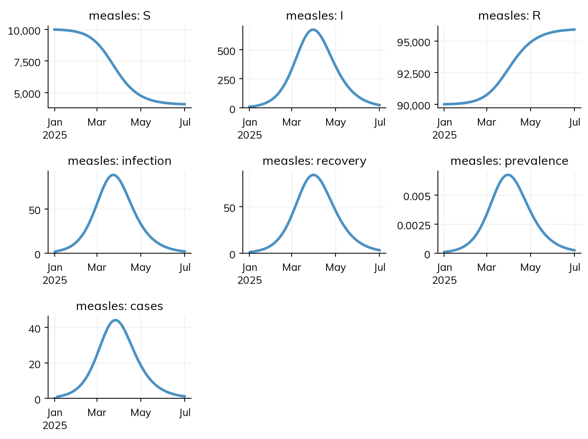
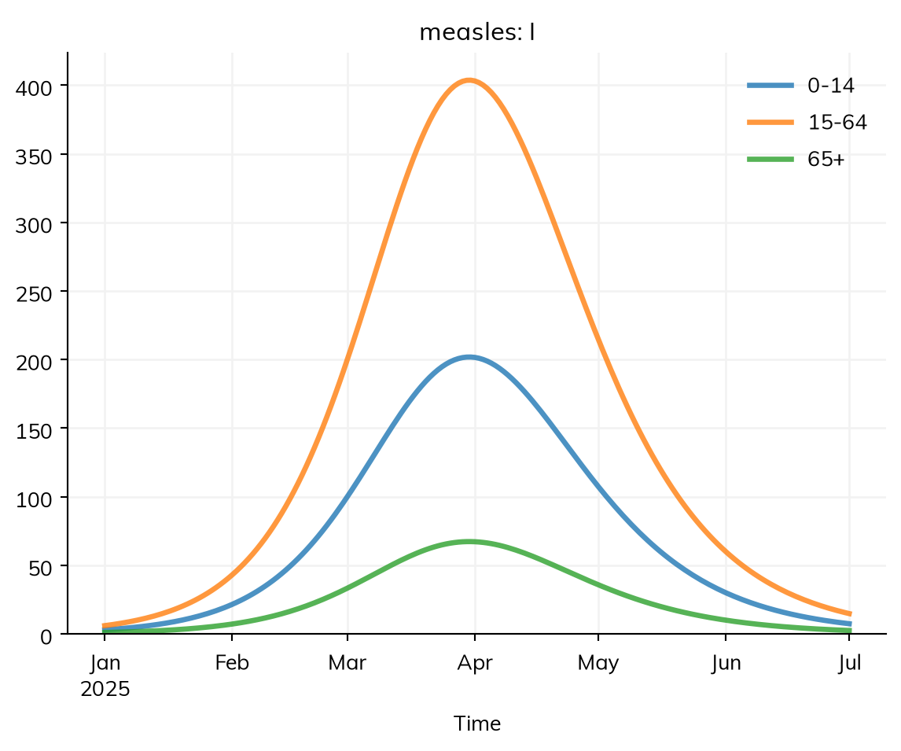
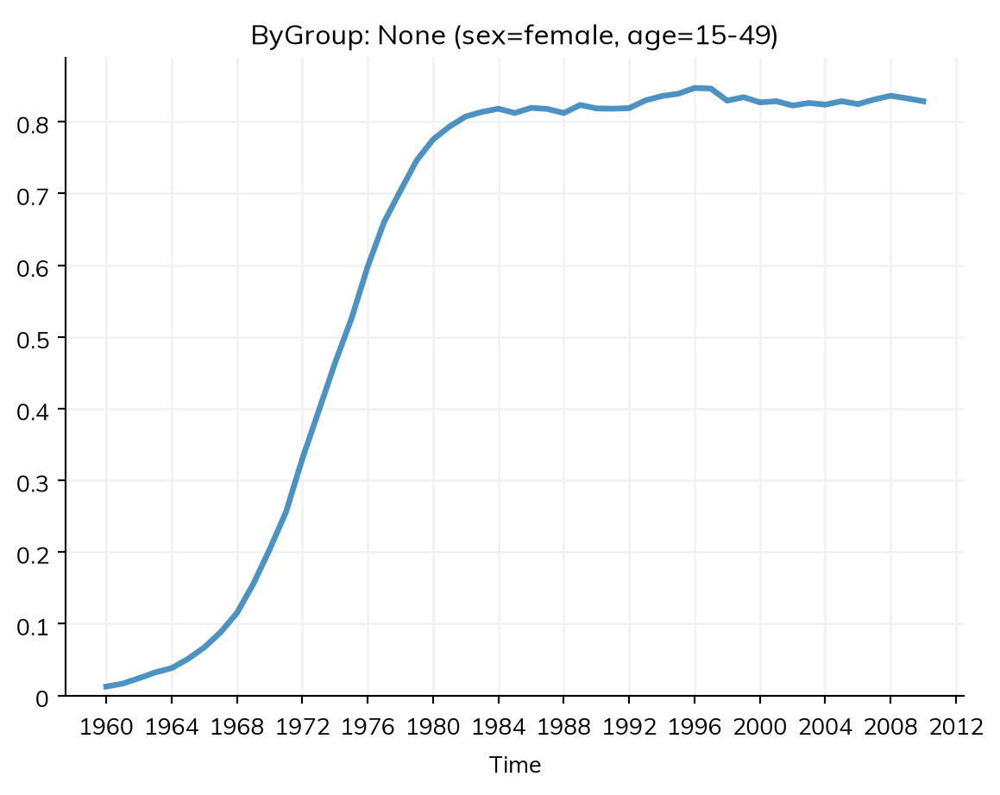
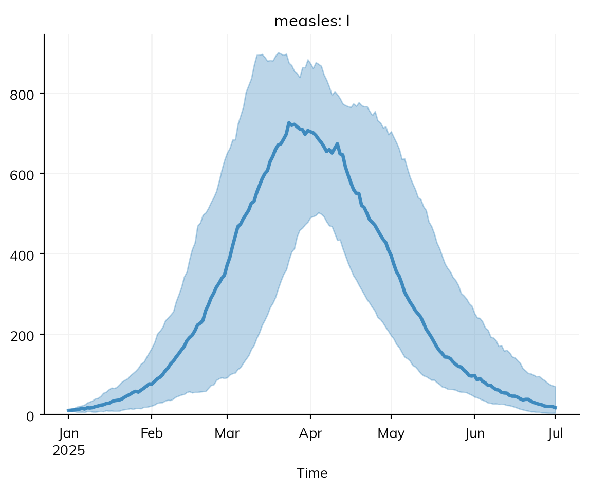

A run produces results: for each disease, the number of people in each state at each time point, and the number who made each transition in each step, plus any other quantities the model declares (prevalence, reported cases). This page covers what the results are, how to read them, how to change their time step, split them by group, compare them with data, plot them, and export them.
Where results are
After a run, sim.results holds the results of each module by name, and the sim’s own (such as alive, the population size):
import starsim as ssS, I, R = ss.states('S I R')infection = S >> I @1.9*I # β = 1.9 per dayrecovery = I >> R @ ss.days(8) # Infectious for 8 days on averagemeasles = ss.Disease(infection, recovery, init=dict(R=0.9), init_n=dict(I=10)) # 90% immune, 10 infectioussim = ss.Sim(measles, total_pop=100_000, start='2025-01-01', stop='2025-07-01', verbose=0)sim.run()res = sim.results.measlesprint(res)
A disease has a result for each state (S, I, R: the number of people in it at each time point) and each transition (infection, recovery: the number who made it during each step), named after the variables they were made from. res.I and res['I'] are the same.
Reading a result
Each result is an ss.Result. It behaves like a NumPy array, one number per time point (so you can index, slice, and do arithmetic on it directly), but it also carries what it is:
Attribute
Meaning
values
The NumPy array of values
timevec
The time point of each value
label
A human-readable label, used in plots
kind
What kind of quantity it is: a stock, a flow, or a ratio (below)
scale
Whether the result is a count that scales with the population (as agents, each agent stands for some number of people); by default, a flow or stock does and a ratio doesn’t
low, high
Bounds, for a result that has them
print('Peak infectious:', round(res.I.max()))print('Total infections:', round(res.infection.sum()))print('Infectious at the end:', round(res.I[-1]))print('First time points:', res.I.timevec[:3])
Peak infectious: 673
Total infections: 5916
Infectious at the end: 25
First time points: [<2025-01-01> <2025-01-02> <2025-01-03>]
Each result says what kind of quantity it is, as its kind, which decides how it is added up over time (its summarize_by), whether it has a running total, and how it is compared with data:
kind
summarize_by
What it is
Examples
Over a period
'stock'
'last'
A number at each time point
S, I, R
The value at the end
'flow'
'sum'
A number of events during each step
infection, recovery, cases
The total
'ratio'
'mean'
One number divided by another
prevalence
Worked out again from the totals of its parts (the mean, for one with no parts)
A result of your own gives it as ss.Result('n_protected', kind='stock'); if it isn’t given, it is guessed from the name (new_... is a flow, n_... and cum_... are stocks), or else from the type: an integer result (dtype=int) is a count, guessed to be a flow (e.g. doses given each step), and anything else is a ratio. The kind also says whether the result is scaled by the number of people each agent stands for: a flow or stock is, and a ratio isn’t (scale= overrides this). kind=None is for a result with no meaning over time, which isn’t summarized. To summarize a result another way without changing what it is, give summarize_by= too: ss.Result('new_cases', kind='flow', summarize_by='mean') is a flow (it still has a running total, and is summed to compare it with weekly data) whose summary over the run is its mean per step.
A flow’s running total is .cum, so res.infection.cum[-1] is the number of infections over the whole run. Two cautions: summing a stock over time does not count people (res.I.sum() counts each person once for every step they are infectious), and the people infectious at the start are not new infections during the run, so infection.sum() leaves them out; add them if your definition of outbreak size includes everyone ever infected.
Time points
A result has one value for each time point of the sim, from start to stop. I[0] is the number infectious at the start, before any step; infection[0] is 0, since no step has ended yet; and infection[1] is the number of infections during the first step. A flow is dated at the end of its step: with daily steps, the infections dated 2 January are those during 1 January.
print('Infectious at the start:', res.I[0])print('Infections at the start:', res.infection[0])print('Infections in the first step:', round(res.infection[1], 2))
Infectious at the start: 10.0
Infections at the start: 0.0
Infections in the first step: 1.96
More results: ratios and outcomes
A model can declare more results. A ratio of states, such as prevalence, is given to the disease along with the transitions, and an outcome (ss.outcome()) is a quantity worked out from flows, such as the cases that are reported: here, half of infections, three days after they happen:
S, I, R = ss.states('S I R')N = S + I + Rinfection = S >> I @1.9*Irecovery = I >> R @ ss.days(8)prevalence = I / N # The share of people infectiouscases = ss.outcome(0.5*infection, delay=ss.days(3)) # Half of infections are reported, 3 days latermeasles = ss.Disease(infection, recovery, prevalence, cases, init=dict(R=0.9), init_n=dict(I=10))sim = ss.Sim(measles, total_pop=100_000, start='2025-01-01', stop='2025-07-01', verbose=0)sim.run()res = sim.results.measlessim.plot('measles')

Each result is named after its variable (prevalence, cases). See Outcomes for reporting, delays, and how long people stay in an outcome such as hospital.
Changing the time step of a result
resample() gives a result over longer periods, adding it up by its summarize_by without being told: weekly cases are the total over each week, monthly numbers infectious are the value at the end of each month. to_series() gives a pandas series with the dates as its index:
A disease stratified by age (see Stratification) still has one result for each state and transition; each is the total over the groups, and has the groups inside it. select() picks groups, and by() gives one line for each:
Peak infectious, all ages: 673
Peak infectious, aged 65+: 67

A ratio such as prevalence is never averaged over groups: its numerator and denominator are each added up over the groups selected, and then divided. Here the groups mix at random, so the curves differ only by the size of each group; with a contact matrix, they differ in shape too.
A module written as code can keep its results by group too, rather than one result for each group (prevalence_f_15_20 and so on). Stratify the sim, make the result with groups=True, and set it at each step from sim.groups.count(), which counts the people alive in each group for whom a condition holds, in one pass. As agents, stratifying by a property people already have, such as sex or age, changes nothing in the run, so it can be done for the results alone:
class ByGroup(ss.Analyzer):def init_results(self):super().init_results()self.define_results(ss.Result('prevalence', groups=True))def step(self): groups =self.sim.groupsself.results.prevalence.set_groups(self.ti, groups.count(self.sim.diseases.sis.I), groups.count()) # The infected over everyone, in each groupsim = ss.Sim(ss.SIS(), networks='random', analyzers=ByGroup(), stratify=dict(sex=['female', 'male'], age=[0, 15, 50]), stop=2010, verbose=0)sim.run()sim.results.bygroup.prevalence.select(sex='female', age='15-49').plot()

Comparing with data
Data is matched to results by name: a column called cases in a table given as data= is compared with the result cases, and plotted with it, and weekly data is compared with the total of a flow over each week. Outcomes covers attaching data, including making data from a run of the model with sim.to_data(); it is the data that calibration fits to.
Plotting
sim.plot() plots the main results of every module, sim.plot('measles') those of one module, and res.I.plot() a single result, each labeled and dated from the results themselves. Plotting covers choosing what to plot, comparing runs, styles, and saving figures.
Summaries and export
sim.summarize() gives each result over the whole run, by its summarize_by: the total of a flow ('sum'), the final value of a stock ('last'), and the mean of a ratio ('mean'). It is a table with a row for each result and one column, value, as msim.summarize() gives for many runs (see below), so one run and many read the same way; results that are 0 throughout are kept, so the tables of different runs line up row for row. sim.summarize('measles_infection') gives one result’s summary as a number, and how= summarizes another way, e.g. sim.summarize('measles_I', how='max') for the peak (how= takes 'mean', 'median', 'sum', 'last', 'max', 'min', or a function).
sim = ss.Sim(measles, total_pop=100_000, start='2025-01-01', stop='2025-07-01', verbose=0) # The measles model with prevalence and reported cases, not stratifiedsim.run()sim.summarize()
value
result
measles_S
4073.502348
measles_I
24.646102
measles_R
95901.851551
measles_infection
5916.497652
measles_recovery
5901.851551
measles_prevalence
0.002595
measles_cases
2955.171004
alive
100000.000000
new_deaths
0.000000
new_emigrants
0.000000
cum_deaths
0.000000
to_df() gives results as a table (a pandas dataframe), for one module or for the whole sim, with one column per result; it can then be saved with df.to_csv() or df.to_excel():
df = sim.to_df()df.head()
time
measles_S
measles_I
measles_R
measles_infection
measles_recovery
measles_prevalence
measles_cases
alive
new_deaths
new_emigrants
cum_deaths
0
2025-01-01
9990.000000
10.000000
90000.000000
0.000000
0.000000
0.000100
0.000000
100000.0
0
0
0
1
2025-01-02
9988.039246
10.669366
90001.291387
1.960754
1.291387
0.000107
0.000000
100000.0
0
0
0
2
2025-01-03
9985.947711
11.383099
90002.669190
2.091535
1.377802
0.000114
0.000000
100000.0
0
0
0
3
2025-01-04
9983.716790
12.144080
90004.139130
2.230921
1.469941
0.000121
0.000000
100000.0
0
0
0
4
2025-01-05
9981.337330
12.955365
90005.707305
2.379460
1.568175
0.000130
0.980377
100000.0
0
0
0
A single module’s results, or a single result, give a table the same way: sim.results.measles.to_df(), or res.I.to_df(); .df is a shortcut for to_df() (res.I.df, sim.results.measles.df). sim.results.flatten() gives the same results as a flat dict, keyed like the columns (measles_I).
Results of many runs
The runs of a stochastic model together (see Scenarios) have the same results as one run, with every run inside each. The usual summaries are built in:
msim = sim.run(solver='binomial', n_runs=20)res = msim.results.measles.Imedian = res.median() # The median of the runs at each time pointlow, mid, high = res.quantiles() # The 2.5%, 50%, and 97.5% quantiles at each time pointfirst = res.select(run=0) # One runres.plot() # The median, and the range of 95% of the runs

msim.summarize() gives the median and interval of each result over the whole run (the total infections of each run, for example), which is not the same as the median at each time point: the quantiles at each time point summarize the runs time point by time point, so they don’t give the quantiles of the epidemic’s peak or of its total size.
Results with several columns
Sometimes a result naturally has several values at each time point, such as new infections by variant or by age group. For a declared disease, stratifying does this. In a module written as code, rather than defining one result per group, give columns= to ss.Result, which makes a result with a column for each. Here an analyzer counts new infections among children and adults separately:
import numpy as npclass InfectionsByAge(ss.Analyzer):""" Count new infections among children and adults """def init_results(self):super().init_results()self.define_results( ss.Result('new_infections', columns=['children', 'adults'], label='New infections'), )def step(self): new =self.sim.diseases.sis.infection.uids # Those infected in this step children =self.sim.people.age[new] <15self.results.new_infections[self.ti] = [np.count_nonzero(children), np.count_nonzero(~children)]sim = ss.Sim(ss.SIS(), networks='random', analyzers=InfectionsByAge(), n_agents=2000, start=2000, stop=2010, dt=ss.weeks(1), verbose=0)sim.run()res = sim.results.infectionsbyage.new_infectionsprint('Shape:', res.shape)print('Columns:', list(res.by_column().keys()))
Shape: (522, 2)
Columns: ['children', 'adults']
Each column is available as a result of its own, as res.adults or res.col('adults'), or all at once with res.by_column(). These share their data with the whole result, so changing one changes the other. Most operations handle each column separately: they are scaled by the number of people each agent stands for, to_df() gives one column of the table each, sim.summarize() summarizes each, and resample() sums each over the period (since this result is a flow):
The flow at a time point is the step that ends there. The peak in infections dated 10 March is the infections during 9 March, with daily steps.
A ratio is not a mean over groups. Use res.prevalence.select(age='65+'), not the mean of the prevalence in each group.
Agents’ results are scaled. With each agent standing for several people, counts are multiplied by that number when the run ends; a count read in the middle of a run is in agents (see Branching and rescaling).